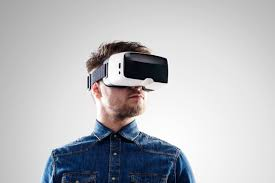

La realidad virtual es la creación de un entorno o escenario ficticio o simulado con apariencia totalmente real y que nos permite trasladarnos a cualquier lugar o situación que queramos como si nos creyésemos dentro de él, con la ilusión de estar dentro de este entorno. A través de un dispositivo como gafas o cascos de realidad virtual podemos sumergirnos dentro de juegos donde nos creemos nuestros personajes o viajar por todo el mundo sin movernos del sofá del salón, pero a través de una experiencia totalmente realista. Además, permite la utilización de otros dispositivos
La realidad virtual es una tecnología tiene múltiples beneficios. No son pocas las áreas que se han visto afectadas positivamente por su implementación. Mejor que la realidad Si se compara con la realidad, esta tecnología ofrece imágenes de alta calidad para darnos una sensación de estar en un mundo diferente mientras hacemos otras actividades (como jugar). Los juegos que usan la realidad virtual dan la impresión de estar realmente dentro del juego. Se recibe cada movimiento como si fuera real con todos los efectos visuales y sonoros junto a otras sensaciones más. Práctica La realidad virtual podría implementarse en actividades cotidianas, como ir a la compra o planear un viaje. Por ejemplo, supongamos que vamos a hacer una reforma en la cocina de casa. Es agotador mirar los diseños mientras nos imaginamos cómo luciría finalmente. Gracias a esta tecnología podemos ver fácilmente cualquier cambio en el interior de nuestra casa. Aumento de las posibilidades de aprendizaje Con esta tecnología, los médicos pueden comprender de forma sencilla las nuevas funciones de cualquier medicamento o analizar sus efectos secundarios. Otros ámbitos, como la redacción y edición de contenido también pueden usar la realidad virtual para corregir ciertos fallos.
Necesitamos unas gafas o cascos específicos y el vídeo o dispositivo que crea el entorno, que puede ser tu teléfono móvil o tu ordenador. Las gafas nos aíslan de todo lo que nos rodean y amplían el campo de visión haciendo que parezca que la pantalla está alrededor y no solo “delante” de nosotros aunque realmente no están envolviéndonos en 360 grados. Para engañarnos, utilizan dos imágenes diferentes en cada ojo. Más que dos imágenes, son dos ángulos diferentes de la misma escena. Esto hace que se simule profundidad y que, sin gafas, los vídeos dedicados a esta tecnología los veas como doble o en dos trozos diferenciados. Además, se utilizan sensores específicos que permiten detectar si nosotros nos giramos para conseguir así que el espacio gire con nosotros ya sea en el propio teléfono móvil (si utilizas unas como las Cardboard) o directamente en el casco en sí que cuenta con sensores propios para detectarlo.
Ir a Inteligencia Artificial Ir A Realidad Aumentada 